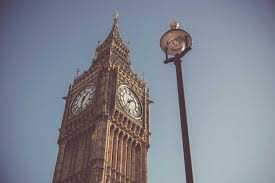

BIG BEN
LOCATION
ㅤBig Ben is located in the city of London, the capital of the United Kingdom. It forms part of the Palace of Westminster complex, which houses the British Parliament. The clock tower, where Big Ben is located, sits on the banks of the River Thames in central London. It is a very popular tourist attraction and one of the most recognizable symbols of the city.
CURIOSITIES
-Name: Officially called the Elizabeth Tower, the tower is known as Big Ben, which is the name of the bell inside.
ㅤ-Height and weight: The tower is 96 meters high and the bell, known as the Great Bell, weighs around 13.5 tons.
ㅤ-Inauguration: The tower was completed in 1859 and the clock started working in May of the same year. Big Ben's bell rang for the first time in July 1859.
ㅤ-Accuracy: Big Ben's clock is known for its accuracy and is regularly adjusted.
ㅤ-Outages: Since 2017, Big Ben's bell has only rung on special occasions due to restoration work on the tower.
ㅤ-Night lighting: The tower is illuminated at night, providing a spectacular view.
ㅤ-Iconicity: Big Ben is one of London's most famous landmarks and attracts many tourists.
HISTORY
ㅤThe history of Big Ben dates back to the 19th century, during the Victorian era in England. The clock tower was designed as part of the rebuilding of the Palace of Westminster, which had been severely damaged by fire in 1834.
The architect chosen for the project was Charles Barry, while construction was led by Augustus Pugin. Construction on the clock tower began in 1843 and was completed in 1859. The tower was designed in the Victorian Gothic style, with ornate details and an impressive height of 96 meters.
ㅤThe tower's official name is Elizabeth Tower, in honor of Queen Elizabeth II, who ascended the throne in 1952. However, the name "Big Ben" is popularly used to refer to both the tower and the clock's bell.
Big Ben's bell, known as the Great Bell, was cast in 1858 by the Whitechapel Bell Foundry. It weighs around 13.5 tons and has since become one of the most famous bells in the world.
The Big Ben clock was designed by Edmund Beckett Denison and operated by the watch company Dent. It is a mechanical clock with four faces, each with a diameter of 7 meters. The mechanism is powered by weights and strings, and the watch's accuracy is widely admired.
ㅤOver the years, Big Ben has become one of London's most recognizable and beloved landmarks. It is a popular tourist attraction, with millions of visitors admiring its imposing architecture and hearing the bell ring on special occasions.
In August 2017, restoration work began on the Big Ben tower, including the decommissioning of the bell to protect workers. Since then, the bell rings only on special occasions, such as the New Year and commemorative events.
Despite being both a tower and a bell, Big Ben has become an iconic symbol of London and a culturally significant landmark not only for Londoners, but for people all over the world.
CULTURAL IMPACT
ㅤ Big Ben has a significant cultural impact as an iconic London icon. His presence is recognized worldwide and he is often portrayed in films, television programs and works of art. In addition, Big Ben attracts a large number of tourists and awakens a sense of pride and national identity among the British. Its image and meaning continue to play an important role in contemporary culture.

TIPS FOR VISITORS
ㅤ-Plan ahead and check visiting hours.
ㅤ-Find a place to take pictures.
ㅤ-Combine your visit with other nearby attractions.
ㅤ-Consider taking a boat trip on the River Thames.
ㅤ-Be aware of access restrictions due to restoration works.
ㅤ-Visit at night to see Big Ben illuminated.
ㅤ-Explore the surrounding area, enjoying shops and restaurants.
ㅤ-Please respect local rules and be aware of any safety guidelines.